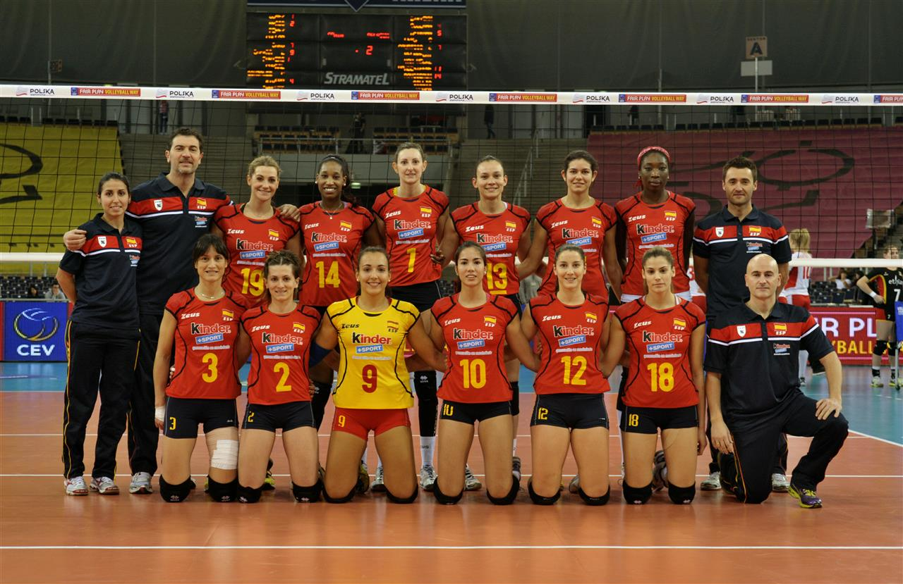

The Impact of Volleyball Becoming an Olympic Sport
Curious about where volleyball originated and who invented it? Explore the captivating story of volleyball's invention and its path to international fame.
Published 07:34, 09 Jul 2024
Published 07:34, 09 Jul 2024
Volleyball was invented in 1895 by William G. Morgan, a physical education instructor at the YMCA in Holyoke, Massachusetts. Originally named "Mintonette," Morgan created the game as a less physically demanding alternative to basketball, which had been invented just a few years earlier. His goal was to provide an activity that could be enjoyed by older members of the YMCA, blending elements from basketball, baseball, tennis, and handball. Morgan's new game quickly caught on, but it wasn't until a demonstration at a YMCA conference in 1896 that it received the name "volleyball." The name was suggested after participants noticed how the ball was constantly "volleyed" back and forth over the net.
After its invention, volleyball spread rapidly, especially through YMCA branches worldwide. By the 1910s, it had gained popularity across Europe and Asia, particularly in countries like the Philippines, where local adaptations such as spiking were introduced, enhancing the sport's excitement. In 1947, the International Volleyball Federation (FIVB) was established, marking a pivotal moment for the sport's international growth. Just five years later, the first Volleyball World Championship was held, further cementing its global status. Volleyball's Entry into the Olympic Games The biggest leap for volleyball came in 1964 when it was officially included in the Tokyo Olympic Games. Its inclusion was a major milestone for the sport, providing a platform for volleyball to showcase its competitive nature and athleticism on the world stage. Since then, volleyball has remained a staple of the Summer Olympics, with both indoor and beach volleyball becoming crowd favorites. The sport's Olympic presence has brought it immense international recognition and inspired generations of athletes to pursue the game at the highest level.
Increased Popularity: The global exposure offered by the Olympics allowed volleyball to grow in popularity, particularly in regions where it had previously been less known.
Development of Professional Leagues: Olympic volleyball inspired the creation of professional leagues across the world, including the Italian, Brazilian, and Japanese leagues, all of which feature top-tier players.
Improved Access and Inclusion: With its Olympic spotlight, volleyball became a more accessible sport, attracting diverse players from various countries. The beach volleyball version, introduced in the 1996 Atlanta Olympics, also expanded the sport’s appeal to a younger and more casual audience.
Increased Gender Equity: Volleyball has been one of the leading sports in promoting gender equity, with both men's and women's competitions given equal billing at the Olympics, further encouraging participation from all genders.
The story of volleyball’s rise from a YMCA gymnasium to an Olympic sport is a testament to its adaptability, excitement, and global appeal. Today, volleyball is played and loved by millions around the world, with its Olympic status helping to fuel its growth and elevate the sport to new levels of competitiveness and athleticism. From its humble beginnings to its current stature on the international stage, volleyball continues to inspire athletes and fans alike, proving that a simple game of volleys can become a worldwide phenomenon. Curious to learn more about volleyball’s evolution? Stay tuned as we explore the key moments and players that shaped its history!